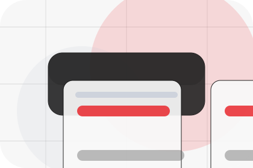
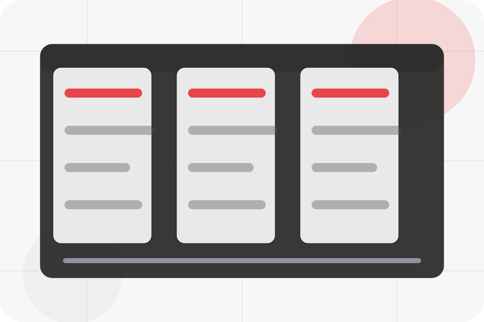
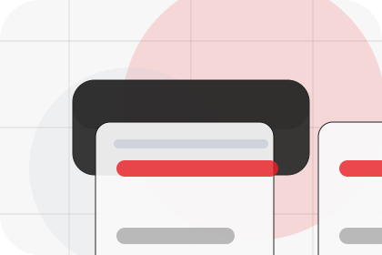
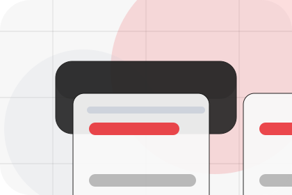
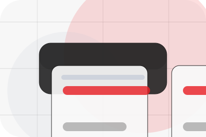
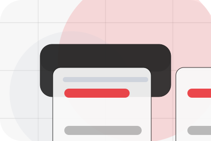
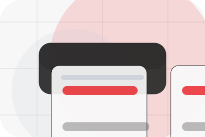
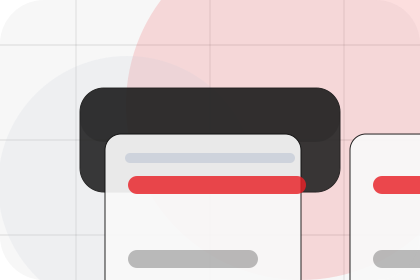
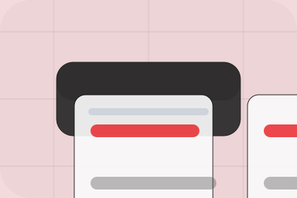

Context
Mission gives the page a specific angle instead of repeating the navigation label.
Company / 01
Company opens as a clear energy decision hub: what Vault offers, who it helps, why it matters, and which route to take first.
The first screen combines positioning, proof, primary action, and fast internal navigation, so people can act immediately or compare the rest of the company route with context.
Centered product hero
Select the closest route and Vault keeps the next step, proof, and follow-up expectation aligned with cost reduction and resilience.

Company / 02
Mission adds technical context to the company route, using the minimal energy product landing structure to support cost reduction and resilience before visitors choose a next step.
Vault uses product output cards and focused copy to make the decision easier to scan, aligning the section with cost reduction and resilience rather than filling space.
Explore Company
Mission gives the page a specific angle instead of repeating the navigation label.

The product output cards show what to compare, what to avoid, and what matters most for energy, power & renewable solutions visitors.

The final cue points to a useful internal route so the section keeps the journey moving.
Company / 03
Values adds technical context to the company route, using the minimal energy product landing structure to support cost reduction and resilience before visitors choose a next step.
Vault uses product output cards and focused copy to make the decision easier to scan, aligning the section with cost reduction and resilience rather than filling space.
Explore CompanyValues gives the page a specific angle instead of repeating the navigation label.
The product output cards show what to compare, what to avoid, and what matters most for energy, power & renewable solutions visitors.
The final cue points to a useful internal route so the section keeps the journey moving.
Company / 04
Team introduces the people, roles, or specialist credibility behind Vault so the decision feels less anonymous.
The copy ties names, roles, credentials, or availability back to the decision on the page instead of treating profiles as decorative biographies.
Explore CompanyThe person, team, or specialist function connected to team is easy to understand.
Credentials, responsibilities, or availability are tied to the visitor's decision, not listed for decoration.
The section explains how to move from profile interest to a practical conversation or booking path.
Company / 05
Partners gives the proof layer for company: standards, evidence, and reassurance that make the next decision feel grounded.
Instead of relying on vague claims, Vault presents visible standards, process cues, and proof artifacts that help energy visitors judge fit.
Explore CompanyVault structures partners around evidence, standard, and a clear next route so visitors can compare the block quickly before they calculate savings.
Calculate SavingsCompany / 06
Certifications gives the proof layer for company: standards, evidence, and reassurance that make the next decision feel grounded.
Instead of relying on vague claims, Vault presents visible standards, process cues, and proof artifacts that help energy visitors judge fit.
Explore Company

Visible proof that helps visitors believe the claims behind certifications.
Company / 07
Standards gives the proof layer for company: standards, evidence, and reassurance that make the next decision feel grounded.
Instead of relying on vague claims, Vault presents visible standards, process cues, and proof artifacts that help energy visitors judge fit.
Explore CompanyVisible proof that helps visitors believe the claims behind standards.

The quality, safety, or operating expectation this section makes explicit.

What becomes clearer before someone decides whether to calculate savings.
Company / 08
Sustainability adds technical context to the company route, using the minimal energy product landing structure to support cost reduction and resilience before visitors choose a next step.
Vault uses product output cards and focused copy to make the decision easier to scan, aligning the section with cost reduction and resilience rather than filling space.
Explore CompanySustainability gives the page a specific angle instead of repeating the navigation label.
The product output cards show what to compare, what to avoid, and what matters most for energy, power & renewable solutions visitors.
The final cue points to a useful internal route so the section keeps the journey moving.
Company / 09
Trust gives the proof layer for company: standards, evidence, and reassurance that make the next decision feel grounded.
Instead of relying on vague claims, Vault presents visible standards, process cues, and proof artifacts that help energy visitors judge fit.
Explore CompanyVisible proof that helps visitors believe the claims behind trust.
The quality, safety, or operating expectation this section makes explicit.
What becomes clearer before someone decides whether to calculate savings.
Company / 10
Vault closes the company route with a clear action, a quick reminder of the value, and a low-friction way to calculate savings.
Visitors who are ready can use the primary action. Visitors who are still comparing can scan the section links, proof, and support routes before they calculate savings.
Calculate SavingsThe final block keeps the choice simple: act now, compare one more proof route, or send enough detail for a focused response.
Calculate Savingscost reduction and resilience
A renewable energy product site with minimalist hero, savings modules, battery/solar cards, and direct calculator. Company ends with a direct path to calculate savings, plus enough context for visitors who still need to compare.

Calculate SavingsInformation is provided for planning and should be reviewed for the final client, location, and operating rules.